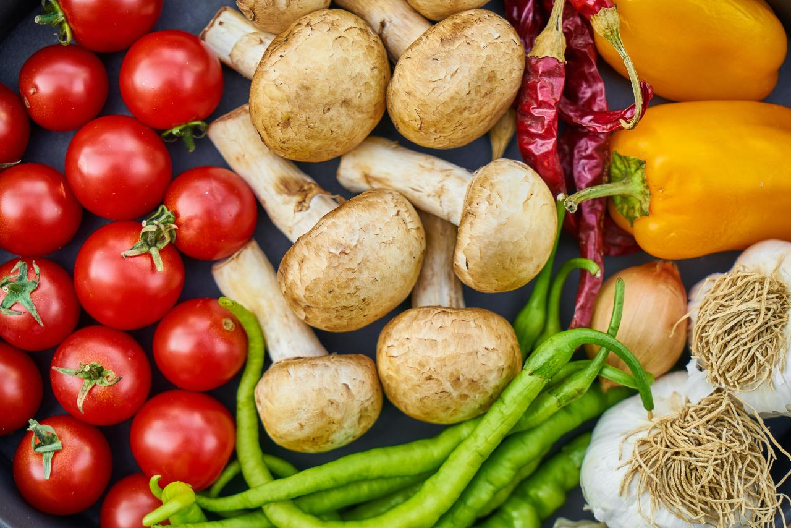

The Bistro Cafe
Home
History
Specials
Contact Us
The Bistro Cafe is located in the heart of Techieville!
We specialize in good-ole home cooking. Our menu ranges from chicken dumplings to our famous fiesta burrito. Our breakfast menu is available all day. Please come by and share a meal with us. We are conveniently located on the corner of 5th and Hypertext Avenue.
